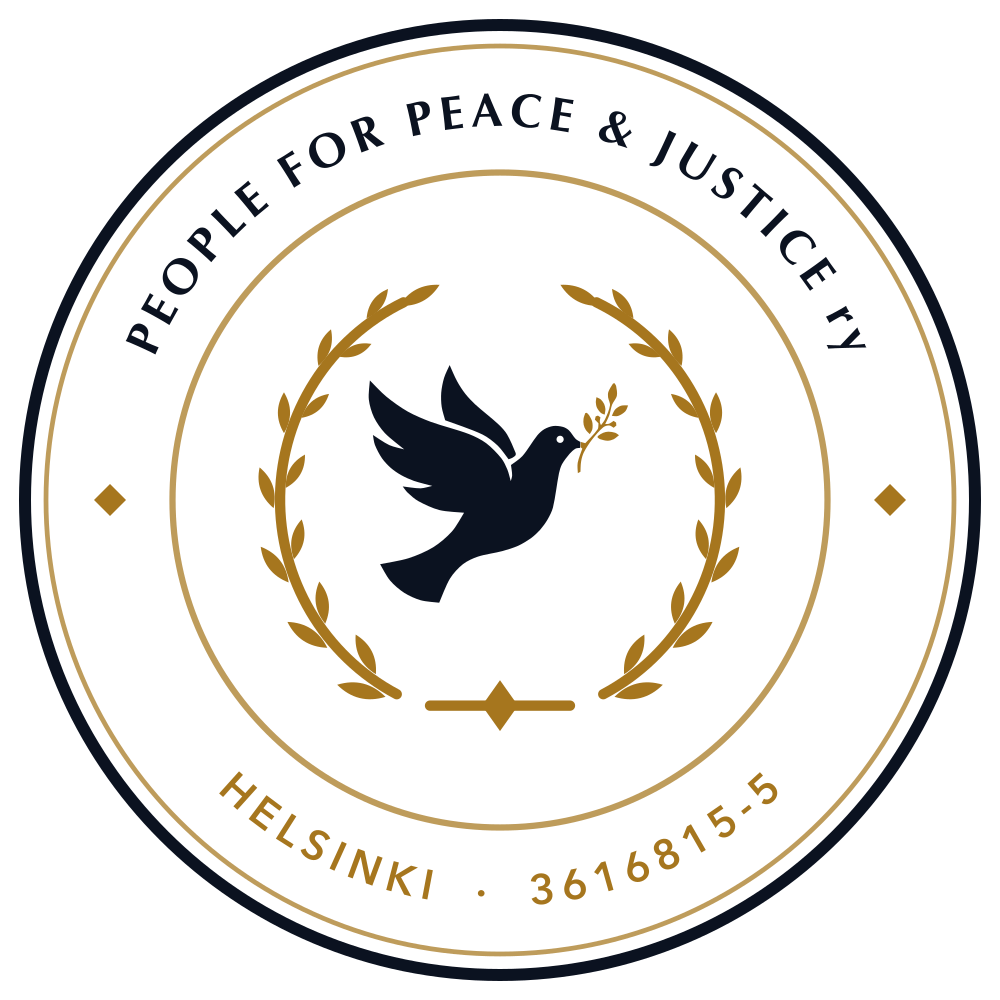

Business ID (Y-tunnus): 3616815-5
Domicile: Helsinki, Finland
info@peopleforpeace.live · peopleforpeace.live
International Legal & Human Rights Mechanisms
The Hague / Geneva / Helsinki
Dear Colleagues,
People for Peace & Justice ry (PFPJ ry) is a non-profit human rights and legal accountability association registered in Helsinki, Finland (Finnish Patent and Registration Office, Business ID 3616815-5). In accordance with § 2 of our Articles of Association, our work focuses on evidentiary documentation of grave violations against children and civilians, victim representation support, and cooperation with international judicial mechanisms.
Please replace this specimen body copy with the formal text of your institutional letter, legal transmittal cover note, or board resolution. Print or export directly to A4 PDF using browser print (Cmd+P / Ctrl+P → Save as PDF, Margins: None, Background graphics: Enabled).
People for Peace & Justice ry · Helsinki, Finland
